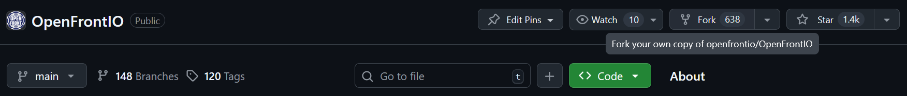

Getting Started
Prerequisites
- git
- npm (v10.9.2 or higher)
- A modern browser with developer tools
- github account
- discord account
Before you start, make sure you have all of these tools installed and ready to be used
Test by running in your terminal (or command prompt)
git --help
npm --help
You should see some help output. If you do, move on. If you don't try restarting your terminal, restarting your device, or reinstalling the tools.
Discussing with the community
If you would like to make a change, especially a larger one (like a new feature, a large rewrite, or similar), you will need to discuss with the contributors and the maintainers on IF the change should be implemented, and potentially HOW it should be implemented. You may make a change without this discussion, but there is a much larger chance that it will require a lot of changes, or be straight up rejected.
The first step to becoming active in the community as a contributor is to request to join the development discord over at [https://discord.gg/K9zernJB5z]. It usually takes up to a few days to get accepted.
In the meantime while waiting, you can open an issue on the issues page. Make sure to fill it out thoroughly. You can then ask to be assigned in the comments of the issue.
Once you know what kind of changes you would like to make, you can move on to the next section.
Making the change
If you are new to git, the first author of this file recommends you check out this website for a visual way of learning how to use it.
Setup
In github, fork the repo onto your account.

Clone the repo, go into it, and set the upstream to the original repo.
git clone https://github.com/YourUsername/OpenFrontIO.git
cd OpenFrontIO
git remote add upstream https://github.com/openfrontio/OpenFrontIO.git
Install dependencies
npm i
Before making a change, make sure your local repo is up to date on the upstream and update your origin.
git checkout main
git fetch upstream --rebase
git push
If you would like to make a new change, create a new branch,
and checkout into it
git checkout -b awesomefeature
Editing files
You can now make a change and make a commit
git commit -m "add XYZ feature" path/to/file.ts
To test your change in-game, you can run any of the following
npm run dev
npm run start:client
npm run start:server-dev
Cleaning up
Before publishing make sure to test your change manually, and then with npm, as you want to avoid creating regressions.
npm run test
Make sure your format also matches the one employed by the rest of the codebase
npm run format
or alternatively
npx prettier --write path/to/file
Lastly, make sure to lint your code
npm run lint
npm run lint:fix
Don't forget to commit your changes
git commit . -m "format"
Publishing your change
Once you are happy with your commits, format your changes, and push them to origin. You cannot push directly to upstream (the official repo).
git push
Now, go to your repo on github, and create a pull request from
your branch
YourUserName/OpenFrontIO/awesomefeature to the
main repo OpenFrontIO/OpenFrontIO/main.
Make sure to fill out the description properly before making a PR. If you are not ready to be reviewed yet, you can submit a "draft PR". As you push changes on your branch, the PR will be updated to match.
coderabbitai will then comment on your PR and suggest changes. If the changes are sensible, implement them.
Afterwards, if your PR is set as ready to be reviewed (not a draft) one of the maintainers will come and comment any needed changes. Discuss them further or implement the changes, and wait for another review.
Hopefully, afterwards, your change will be accepted, merged into main, and then later on, pushed out in an update to the live game!
Next steps
- To learn more about our contribution guidelines, check out the contribution page
- To learn more about the structure of the codebase, go to the development reference